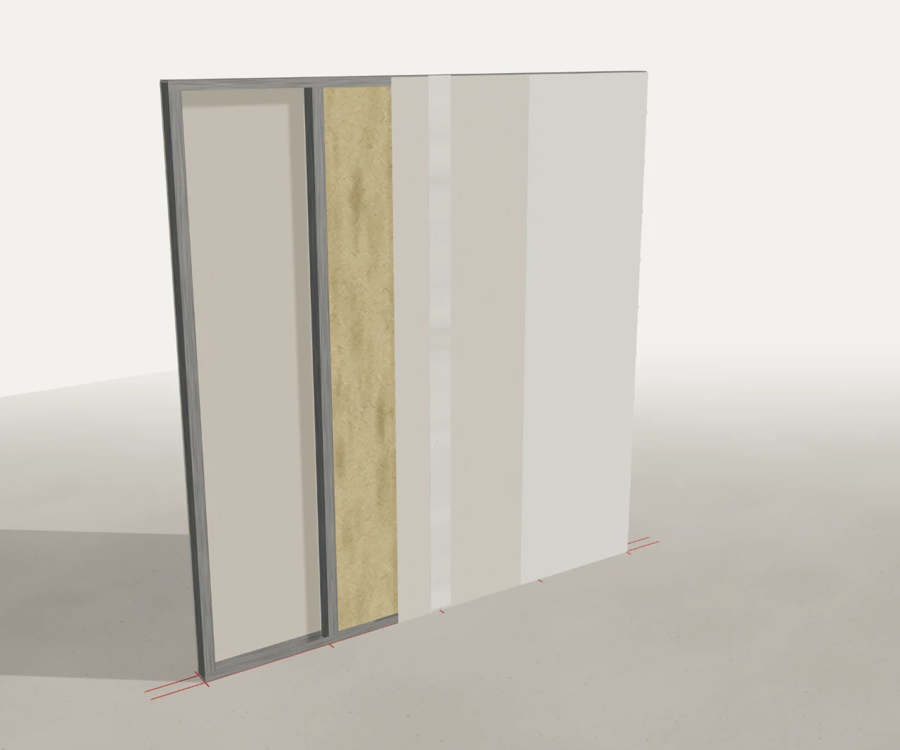
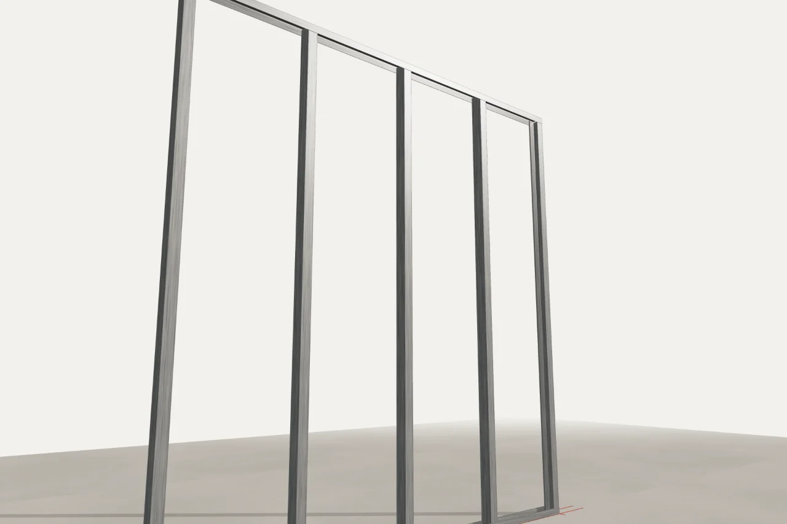

Gashini Dienstleistungen · {{REGION}}
Kleine Arbeiten. Großes Netzwerk. Ein Ansprechpartner.
Trockenbau, Reparaturen und Hausmeisterservice rund um Ihre Immobilie – sauber geplant, ordentlich ausgeführt und bei Bedarf mit Fachbetrieben abgestimmt.
- Trockenbau
- Reparatur
- Hausmeisterservice
- Koordination

- UW-Profil an Boden und Decke
- CW-Ständer, Achsmaß 625 mm
- Mineralwolle zwischen den Ständern
- Gipsplatte 12,5 mm, verschraubt
- Fugen und Schrauben gespachtelt
- Fertige Oberfläche
Leistungen
Drei Bereiche, die wir selbst ausführen.

Trockenbau & Innenausbau
Trennwände, Vorsatzschalen, Decken und Anpassungen im Bestand.
Reparatur & Instandhaltung
Die Tür, die klemmt. Das Loch in der Wand. Die Fuge im Bad. Auch einzeln.
Hausmeisterservice
Regelmäßige Rundgänge, kleine Arbeiten sofort, Mieterwechsel vorbereitet.
Koordination weiterer Gewerke
Braucht ein Vorhaben mehr als ein Gewerk, stimmen wir die Arbeiten mit Fachbetrieben ab – und sagen vorher, wer was macht und wer Ihr Vertragspartner ist.
Zum NetzwerkAuch kleine Aufträge
Nicht jedes Vorhaben braucht eine Großbaustelle. Manches braucht nur jemanden, der es ordentlich erledigt.
Die Tür, die schleift. Das Loch nach dem Umzug. Die Wohnung zwischen zwei Mietern. Gerade die überschaubaren Arbeiten bleiben liegen, weil sich niemand zuständig fühlt. Genau dafür sind wir da.
Wandaufbau
Wie eine Trockenbauwand entsteht
Vier Schritte vom Profil zur fertigen Fläche – an einem vereinfachten Beispiel. Wählen Sie einen Schritt oder scrollen Sie weiter.
Vereinfachter Beispielaufbau zur Veranschaulichung. Welche Konstruktion bei Ihnen passt – Profilgröße, Plattentyp, Dämmung –, klären wir am Objekt. Aussagen zu Brand- oder Schallschutz sind mit dieser Darstellung nicht verbunden.
Projekte
Ausgewählte Arbeiten
Projektberichte
Die ersten Projektberichte entstehen gerade.
Wir zeigen hier nur Arbeiten, die wir selbst fotografiert haben und deren Veröffentlichung die Auftraggeber freigegeben haben – ohne Adressen, ohne private Details. Bis die ersten Berichte stehen, erzählen wir Ihnen gern am Telefon, woran wir zuletzt gearbeitet haben.
So ist jeder Bericht aufgebaut
- AusgangssituationWie es vorher war
- AufgabenstellungWas erreicht werden sollte
- Ausgeführte ArbeitenWas wir gemacht haben
- ProzessbilderZwischenstände, eigene Fotos
- ErgebnisWie es jetzt ist
- Vorher / NachherGleicher Standpunkt, gleiches Licht
Netzwerk
Ein Ansprechpartner. Die richtigen Kontakte für alles Weitere.
Rund um eine Immobilie fallen oft Arbeiten mehrerer Gewerke an. Wir übernehmen, was in unseren Leistungsumfang fällt, und stimmen alles Weitere mit Fachbetrieben ab.
Ablauf
Vier Schritte, keine Überraschungen.
Anfrage
Per Formular, Telefon oder E-Mail. Ein paar Sätze und – wenn möglich – Fotos genügen.
Beratung
Wir klären, was genau ansteht, und sehen uns die Situation bei Bedarf vor Ort an.
Planung & Angebot
Sie erhalten ein schriftliches Angebot. Ist ein Partnerbetrieb beteiligt, steht das darin.
Umsetzung
Wir führen die Arbeiten aus, stimmen Termine mit Ihnen ab und gehen das Ergebnis mit Ihnen durch.
Anfrage
Was können wir für Sie umsetzen?
Wählen Sie, worum es geht – oder beschreiben Sie es einfach in ein paar Sätzen. Fotos helfen, sind aber kein Muss.